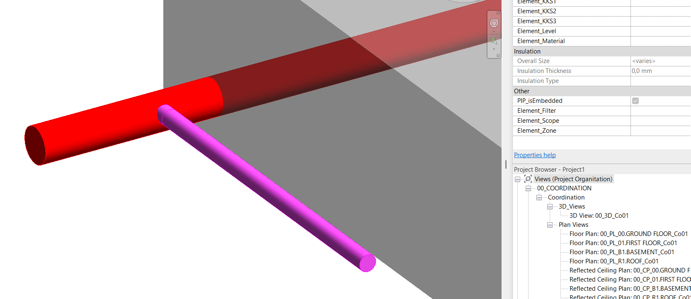
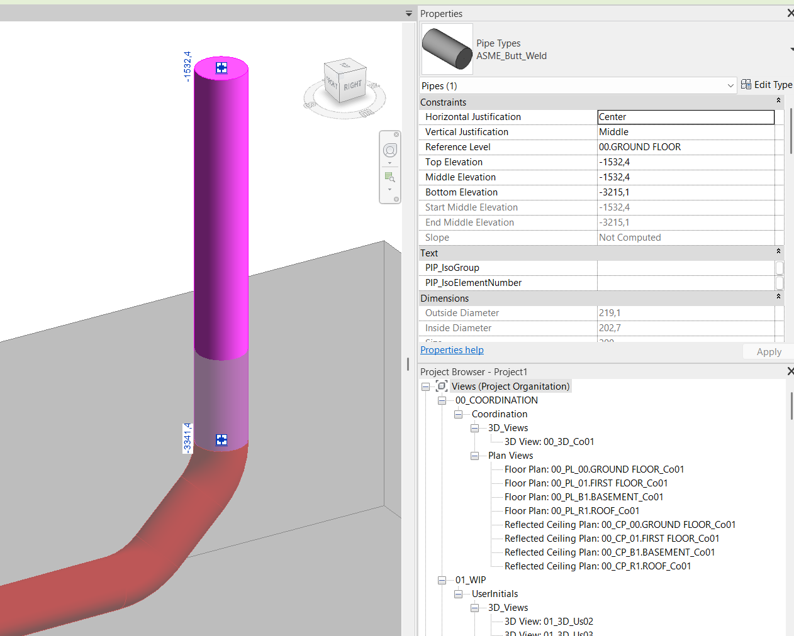

Excel Table Painter

This script requires a checkbox shared parameter. For this example I will be using PIP_isEmbedded.

The script figures out which Pipes and Pipe Fittings to mark by reading the slope value so make sure all the slopes are applied correctly to the corresponding pipes.

The script first resets the values of selected parameters to 0. It then checks for intersection of (#Pipes) and (#Pipe Fittings) with (#Floors) - both local and link. If (#Floor) elements come from a linked file, the "Revit Link Name" input box has to be filled out correctly. The script then separates the vertical pipes (using "Slope Drop Off" value as a separator) and sets their embedded value to 0. The remaining pipes that are considered horizontal and intersecting with floors are set to 1.

Hopefully this script will help you save a bit of time and effort. If you have any questions or feedback, feel free to reach out. You can download the script by clicking the button below or by pulling it from my GitHub repository.
Download Solution